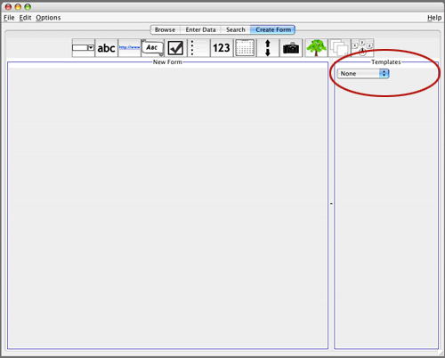
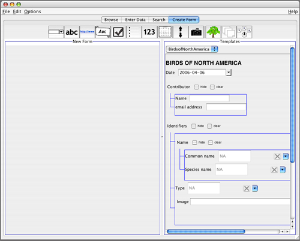
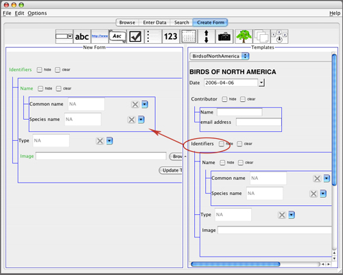
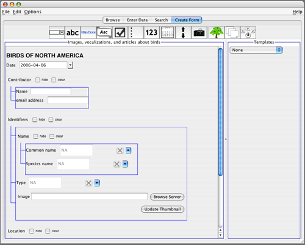

Modifying Existing Templates
Another way to create a new template is to use parts of existing ones, or to modify existing ones. This can be accomplished under the Create Form tab as well.
This time, we will use the "Templates" pane on the right. Click on the pull-down menu in that pane, and select the template we just made. You may also want to resize the panes by dragging the bar in between them.


You can use as much or as little of the existing template as you need. For example, if you want all the same "Identifiers" information to be recorded in your new database, you can drag over the entire "Identifiers" tree, as shown below:

This is a very useful feature that translates into rapid generation of custom data forms, all without the help of a programmer.
If you just want to modify an existing template slightly, you can select "Open" from the File menu, and the entire template will appear in the left pane. There you can add or delete widgets. (To delete a widget, right-click on it and choose "Delete" from the menu that appears.)
At this point an important distinction needs to be made-- if you make changes to an existing template and then select "Save As" from the File menu and give it a new name, you will be starting a new data collection based on the new template. If, however, you make changes to the template and save it with the same name, you will also change all of the existing data forms that were created with that template.


| Previous page | Return to top of page | Next page |